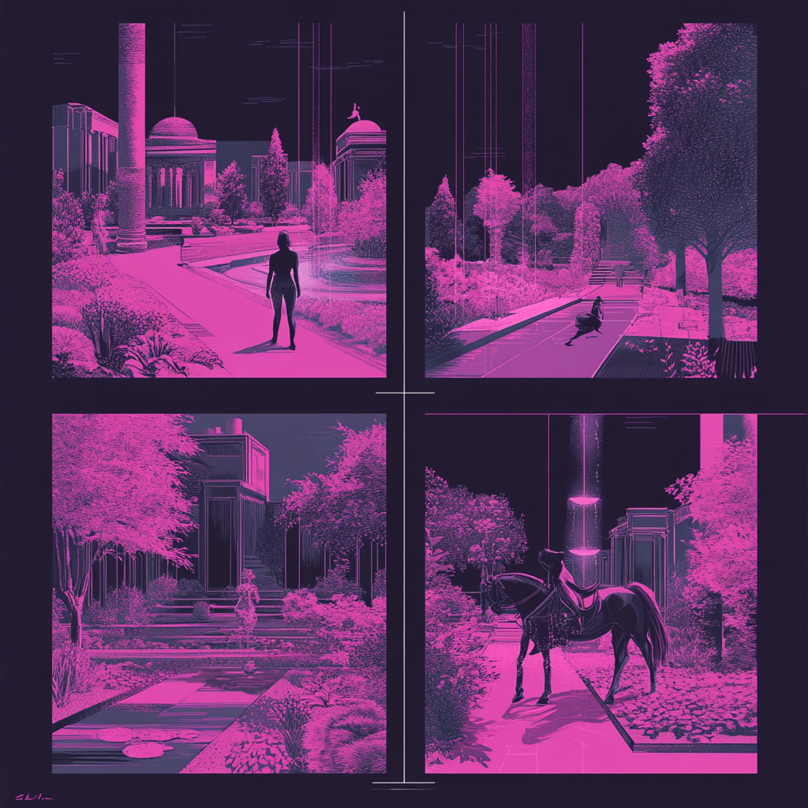

Most of my day is spent building things with AI.

Where it started
A year ago I would have told you the big change was prototyping. I could build in an afternoon what used to take weeks. Then it spread to everything else: strategy docs, decks, research, updates to live sites, all from the same terminal.
The thinking comes along with it. I use AI to write a vision, to define a problem with real data instead of hunches, and to check my own work before I ask anyone else to spend time on it.
My setup
For anyone who asks. People usually do.
- Where
- Claude Code in Ghostty, almost exclusively.
- Model
- Opus 5.5 on high effort. I'd rather wait a little for a better answer.
- Context
- A folder of context files on my machine covering my team, the org, and every project we have going. Every session can read it, and so can my agents.
- Data
- Amplitude for what people do in the product. Snowflake for the backend data. Glean for searching everything we've already written internally.
- Meetings
- Fellow and Wispr Flow take notes. The transcripts go back into the context, so decisions made in a meeting don't get lost.
- Design
- Prototyping in Claude Code is my default now. Figma still comes out from time to time. When I want a bunch of different layouts or directions for the same idea, I brainstorm them with Paper and Claude Code together.
If I had to pick one lesson: give Claude as much context as you can. Most of the bad output I've seen, mine included, was a context problem.
Three sessions, then people.
How I check my work
I don't trust a first draft, whether a person or a model wrote it. So nothing I write with Claude goes straight to a meeting. It goes through at least three sessions, each one starting fresh.
-
Session 1
Draft
I point Claude at the context files, the research and the data, and we write the first version together. This is where the thinking happens, and also where most of the mistakes get made.
-
Session 2
Attack it
New session, or just
/clear. I ask it to analyze the strategy, validate every claim, look for errors and make the proposal stronger. It almost always finds a few things that were missed or just plain wrong. -
Session 3
Tighten
One more pass for brevity, tone and flow, and another round of validation. By the end of this one it's usually ready to share.
-
Then
People
Real feedback from real humans, and I keep refining from there. AI gets me to a draft worth arguing about. People decide whether it's right.
I can't publish the strategy work I do at HubSpot, so I ran the same process on a sample topic and kept the receipts, including everything session two caught.
See the sample strategyProblem definition
I'd rather catch a bad assumption before anyone designs around it.
Before, a solid problem definition meant weeks of chasing analysts and digging through old decks. Now I can pull behavioral data from Amplitude, backend numbers from Snowflake, past research and decisions through Glean, and strategy docs from Google Drive into the same session, and ask how they line up.
They often don't. A plan says users want one thing, and the usage data says they're doing something else. Finding that gap early changes what we build, which beats building the wrong thing quickly.
Where the work lives has changed too. I still use the Google Workspace CLI to create and edit Docs, Slides and Sheets, but more and more I just use Claude's doc and slide artifacts. People can edit them inline like any other doc or deck and leave comments, and I can keep editing them with Claude, which is where most of this work starts anyway.
The morning brief
I built a small team of agents that tells me what actually matters today.
It runs every morning. The agents share the same context files I use, so they know what my team is working on and what's going on across the org. The brief splits things into what I need to get done today and what can wait until tomorrow.
There's a feedback step built in. If it ranked something wrong or missed something obvious, I say so, and that goes back into how it works, so it keeps getting better.
Today
- Feedback on the onboarding principles draft. Review is Thursday and the team needs a day to react.
- Two calibration notes are due before the manager sync.
- The activation dashboard dipped Friday. Worth asking why before someone else does.
Can wait until tomorrow
- Quarterly planning doc comments (no deadline yet)
- Reply on the design system contribution thread
Was this right? 👍 👎 Tell me what I missed.
Illustrative example. The real ones are about real work.
Learning out loud
Nobody on my team is expected to figure this out alone, including me.
We have a team Slack channel for sharing AI workflows. I post mine regularly, including the ones that didn't work, and I ask everyone else to do the same. When someone shares a trick that saves them an hour, the whole team gets that hour back.
The best thing to come out of it is a shared skill library. Skills are reusable instructions for Claude Code. Each one turns something one of us figured out into something the rest of us can run. I wrote the first few. Then designers on the team started contributing their own, which was the point.
-
grill-meMy version of the "grill me" skill. It interrogates a plan until the weak spots show up.
-
product-principlesTurns research into insights, then postulates, then principles. It used to be a whole workshop.
-
product-quality-reviewHelps people write Product Quality Review docs without starting from a blank page.
-
+ more from the teamA couple of designers have each added a skill of their own. I expect that list to grow faster than mine.
Earlier on, I also ran a Claude Code onboarding program to get designers building with code and AI instead of designing around them, and set up GitHub Pages so anyone could share a working prototype without waiting on engineering.
Designing for agents
HubSpot, 2025
My team shipped HubSpot's first agentic setup experience: a conversation backed by specialized sub-agents that build a customer's pipeline, properties and goals as they talk. Launching it was one challenge. Scaling it across every HubSpot tier was a harder one, because edge cases that almost never showed up in testing showed up constantly with real customers.
A few things I believe now that I didn't before:
- Writing the prompt is design work. We worked directly with engineering on each sub-agent's prompt, and that's where the experience really got shaped.
- You can't prevent every error in a non-deterministic system, so design for recovery.
- Users shouldn't notice when one agent hands off to another.
- The agent picking a word you'd never have approved in a spec is not automatically a bug. Getting the substance wrong is.
Prototyping
When I'm designing something, I'm usually prototyping it in Claude Code. A working prototype ends a debate faster than a deck does, especially for conversational and agentic flows that Figma can't really show. When I want options, I use Paper with Claude Code to sketch several layouts or directions at once and pick from there. I also build small internal tools when a leadership problem keeps coming back. This site counts too. I built it with Claude Code.
Earlier experiments
2024
Before Claude Code took over most of my day, NotebookLM was where I started. I used it for literature reviews where I needed answers tied to specific sources, for audio overviews that let a whole team absorb a strategy on a commute, and for running the product principles workshop without the workshop. Gemini helped turn messy notes into storyboard scripts, and Midjourney gave us storyboard frames when there was no budget for an illustrator. Some of that I still do. Most of it has moved into Claude Code and the skill library.
